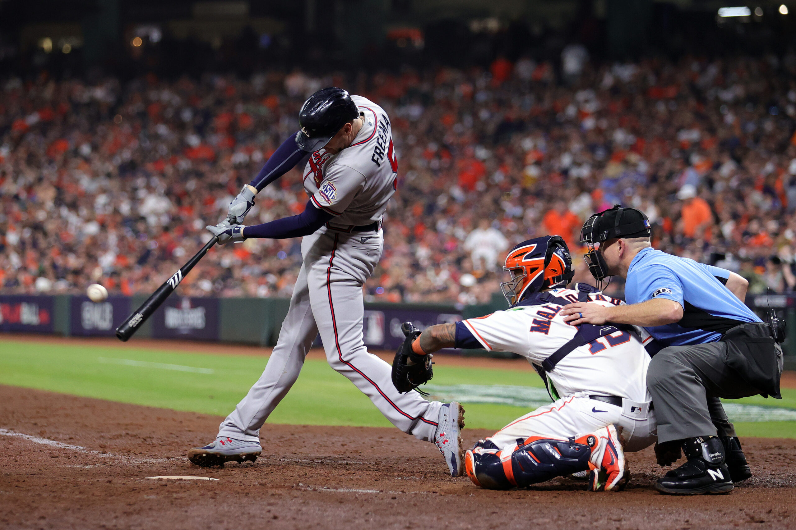
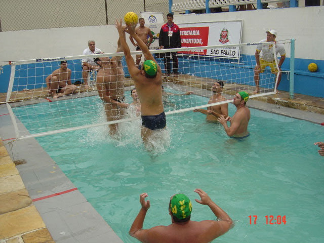
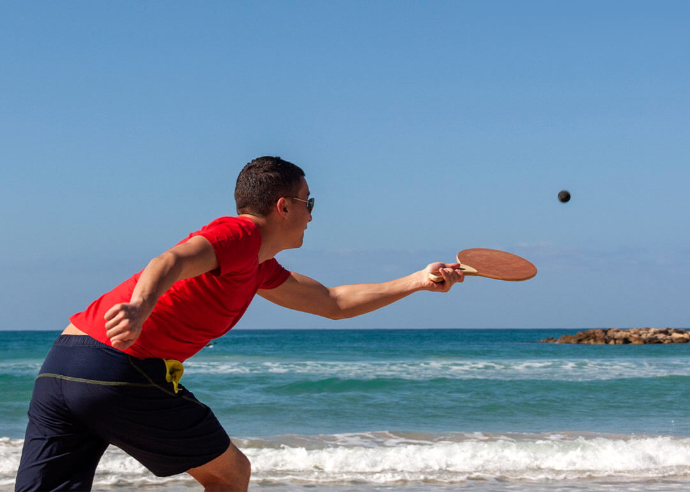

de 92 a 108,2m de raio.

Tão antigos quanto o homem, os esportes são uma das invenções mais beneficas do homem. Além de manter o corpo saudável, ainda auxiliam na criação de uma série de comportamentos positivos, como a humildade, a união, a empatia,dentre outros.
E os esportes com bola são, sem nenhuma dúvida, os mais populares. Mas você sabe a diferenca entre alguns deles? É justamente isso que iremos descobrir abaixo.
| Esportes | Origem | Ambiente | Objetivo | Equipe | ||
| 1 |  | Baseboll | EUA,1971 | Campo com 1/4 de circulo, de 92 a 108,2m de raio. |
realizar | |
| 2 | |
Beach Soccer | 1930,Brasil | Campo | realizar | |
| 3 |  | Biribol | 1968,Brasil | Campo | realizar | |
| 4 |  | Frescobol | 1946,Brasil | Campo | realizar |